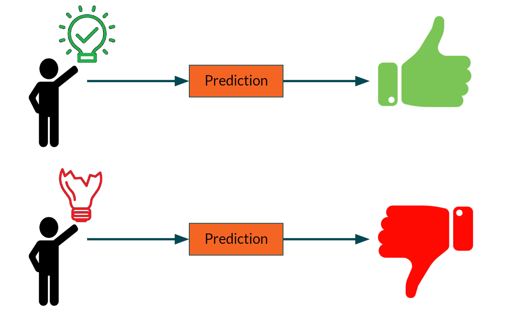

Key Steps : Exploratory Data Analysis

Class balance was visualized, revealing significant imbalance in the Bankrupt? target variable.
Predicting Bankruptcy Using Machine Learning (Random Forest Classifier)
Objective
The goal of this project was to develop a machine learning model to predict whether a company would go bankrupt based on financial indicators. The project involved preprocessing an imbalanced dataset, training a model, and evaluating its performance to achieve high accuracy and reliability.
Dataset
Target Variable: Bankrupt? (binary classification: 1 for bankruptcy, 0 for no bankruptcy). Features: Financial attributes of companies such as debt ratio, working capital, and profitability metrics. Imbalance: The dataset exhibited class imbalance, with significantly more non-bankrupt companies than bankrupt ones.
Key Steps : Exploratory Data Analysis
Class balance was visualized, revealing significant imbalance in the Bankrupt? target variable.
Data Splitting:
The dataset was split into training and testing sets with an 80/20 ratio using train_test_split.
Oversampling
Addressed the class imbalance in the training set using RandomOverSampler, ensuring both classes were equally represented.
Performance Evaluation
confusion matrix plot
Insights from the Confusion Matrix
The model demonstrates strong performance in identifying non-bankrupt companies, achieving a very high true negative count of 1302 and only a small number of false positives (11). This indicates a low false positive rate, making it highly reliable in classifying companies that are not bankrupt. However, the model struggles with accurately identifying bankrupt companies, as evidenced by a low true positive count of 16 and a relatively high false negative count of 35
Feature importance was visualized to identify the most critical financial metrics influencing bankruptcy prediction.
Model Saving
The trained model was serialized using Python’s pickle library for future use.
Conclusion
The project successfully developed a Random Forest model capable of predicting bankruptcy with high accuracy, effectively handling class imbalance and identifying key financial indicators driving predictions. This solution has potential applications in financial risk assessment and early warning systems for stakeholders.
sodiqadekunle54321@gmail.com